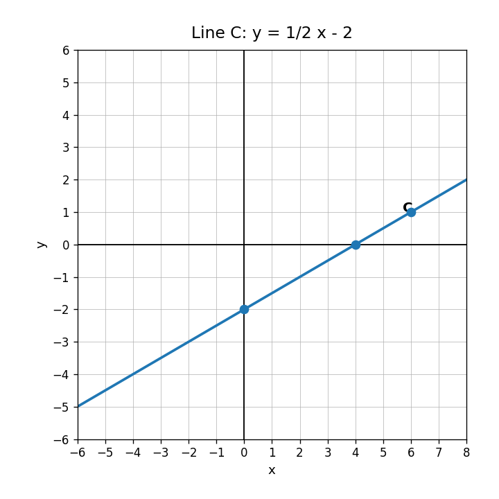
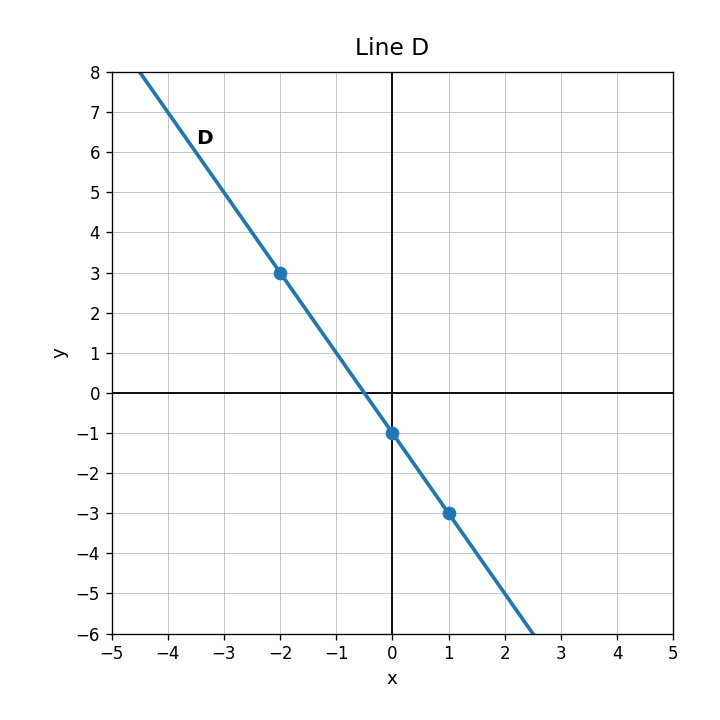
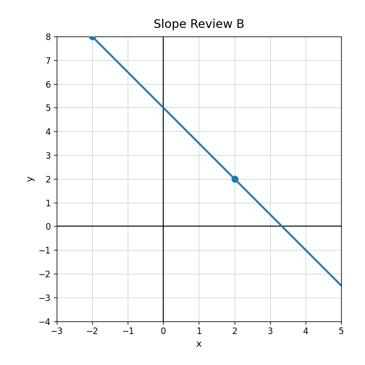

Use the graph. What is the $y$-intercept?

Use the graph. Is the function increasing or decreasing? How can you tell?

Graph $y=\frac{1}{2}x+3$ by starting at the $y$-intercept and using the slope.
A student graphs $y=2x+5$ by starting at $(2,0)$ and then moving up 5. Identify the error and describe the correct graphing process.
What does “rise over run” compare?
Find the slope of the line and state whether it is positive or negative.

Does the table show a constant rate of change?
| $x$ | 0 | 1 | 2 | 3 |
|---|---|---|---|---|
| $y$ | 6 | 9 | 12 | 15 |
What is the slope of a horizontal line?
A printer prints 45 pages in 3 minutes at a constant rate. Find the rate in pages per minute.
Which relationship has the greater rate of change?
| $x$ | 0 | 1 | 2 | 3 |
|---|---|---|---|---|
| A | 2 | 6 | 10 | 14 |
| B | 5 | 8 | 11 | 14 |
A graph of water in a tank has slope $-4$. Explain what the slope could mean in context.
Design a real-world situation with a constant rate of change of $-2.5$. Include units and explain what the sign means.
If $h(x)=x^2-1$, find $h(5)$.
Describe the rule $y=4x-3$ in words.
Create three input-output pairs for $y=2x-5$.
A student says a relation is not a function because two different inputs have the same output. Critique the statement.